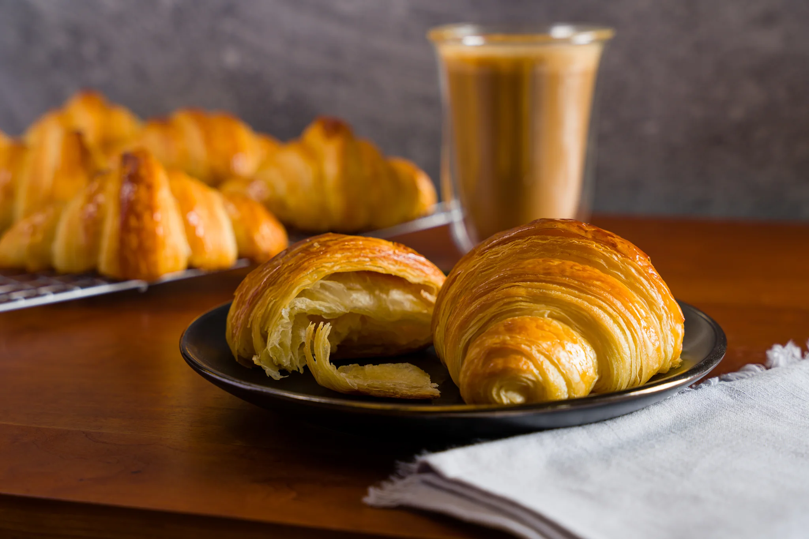
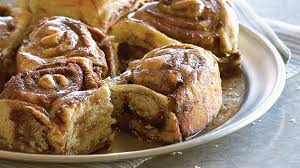

Classic Vanilla Cake
⏱️ 45 mins
👥 8 servings
A moist and fluffy vanilla cake that's perfect
for any celebration. Simple ingredients, amazing results!

Butter Croissants
⏱️ 3 hours
👥 12 pieces
Flaky, buttery, and absolutely divine.
Master the art of French pastry with this detailed recipe.

Soft Chapatis
⏱️ 30 mins
👥 10 pieces
Perfectly soft and pliable chapatis that
pair wonderfully with any meal. A staple you'll make again and again.

Garlic Naan Bread
⏱️ 2 hours
👥 8 pieces
Fluffy, garlicky naan bread with a beautiful char.
Perfect alongside curries or as a snack on its own.

Chocolate Fudge Cake
⏱️ 50 mins
👥 10 pieces
Rich, decadent, and intensely chocolatey.
This cake is a chocolate lover's dream come true.

Cinnamon Rolls
⏱️ 2.5 hours
👥 12 rolls
Soft, sweet, and swirled with cinnamon.
These rolls are worth every minute of waiting!